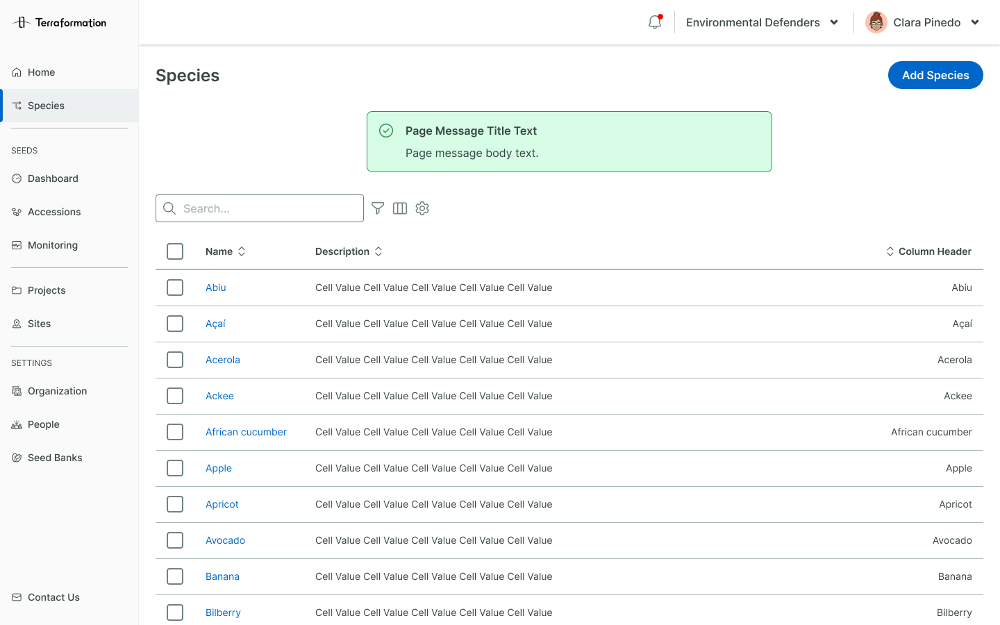
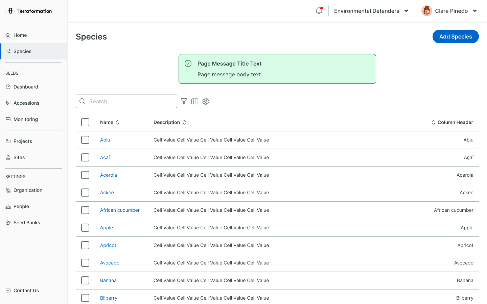
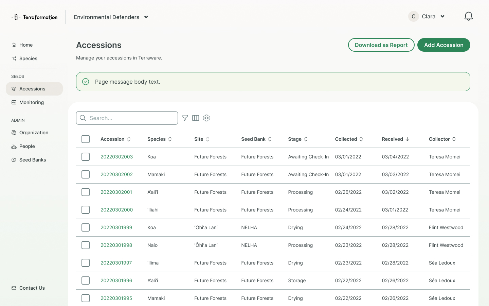
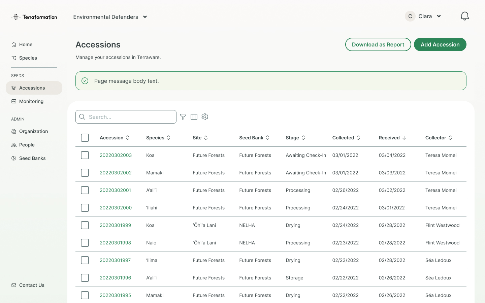
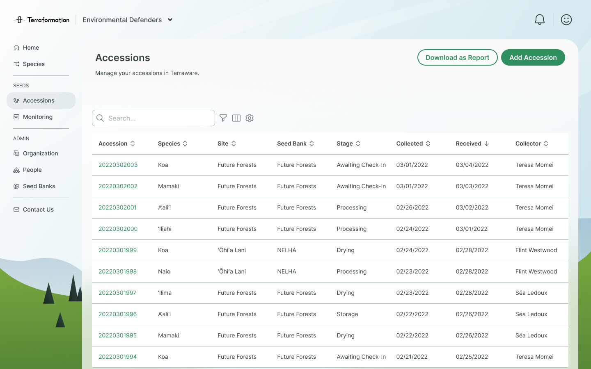
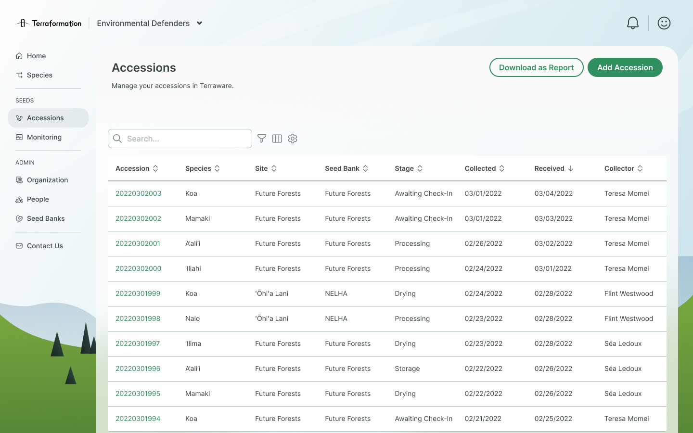
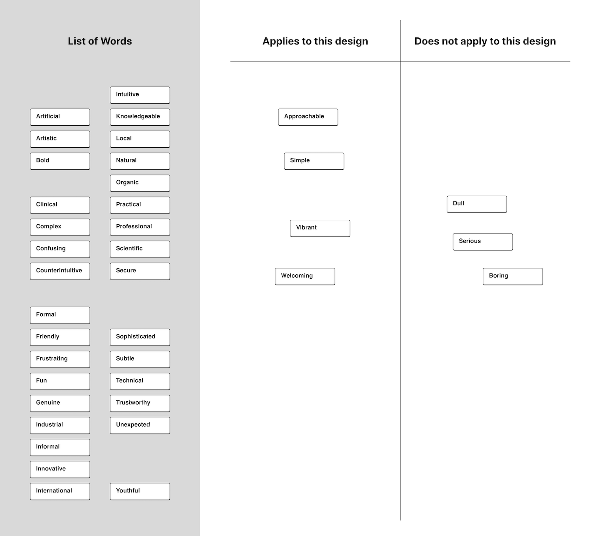
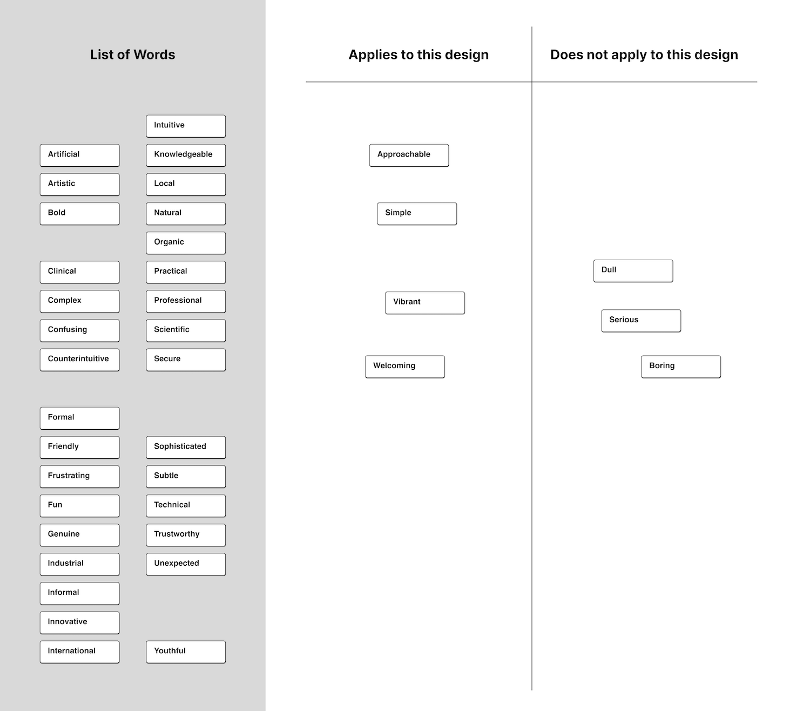
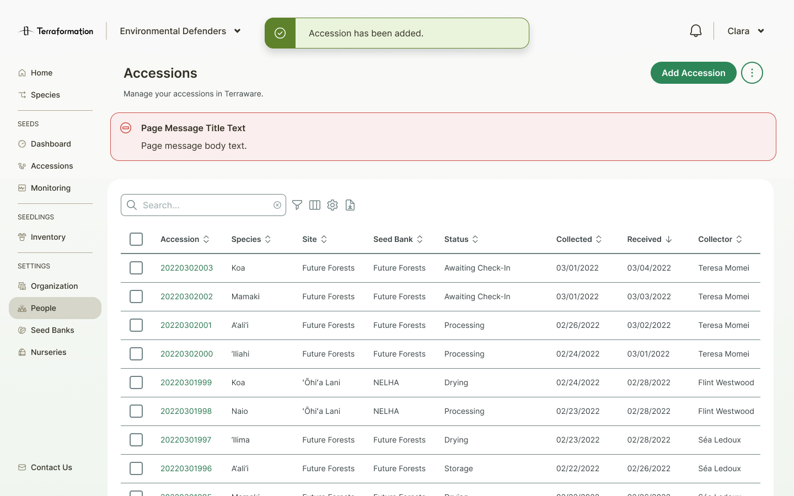
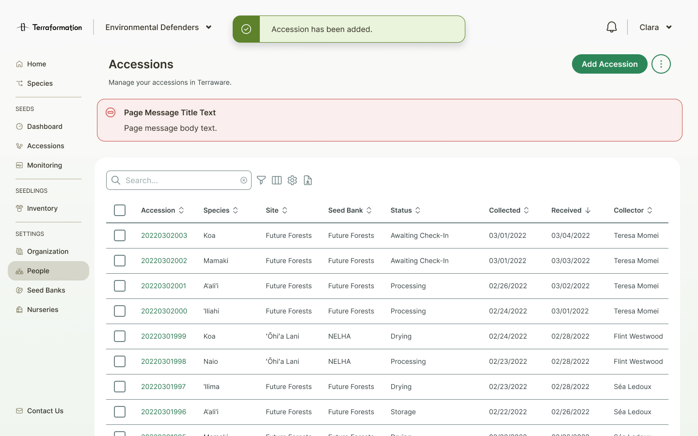

Problem
"It feels a little sterile."
—our internal users, noting the web and mobile apps' starkness and lack of color. The executive team was also pitching to investors soon, so the product team was concerned; if our software products felt barebones or like they lacked personality, we might have less of a chance of securing funding.
Our apps are using blue as our primary color, but the company's brand color is green.
The blue that we were using in our apps was a legacy from our previous head of design, who had been advocating for changing the company brand color to blue. Since that didn't end up happening, it left our product branding unaligned.
Solution
A visual refresh highlighting green, with a natural and approachable feel.
I led the design team in initial branding exercises and brainstorming, then took the reins, continuing to iterate and refine. Once the visual approach was finalized, I worked with Chudo, our design systems expert, to create and roll out Kaloko, v2 of our design system.
Old
 

New
 



Process
Branding Brainstorm
To achieve a successful rebrand, we needed to create a vision to work
towards. I wanted everyone to have a voice in the process, so I started off by inviting my
design team members, as well as designers in marcomms and my design manager, to complete
some branding exercises.
I then compiled all of the results for a team discussion. We
highlighted areas of overlap, and discussed where we had differing opinions. To wrap up the
exercise, we voted on the top adjectives, and after further discussion, defined four
adjectives to characterize our rebrand moving forward.


Mild & Wild
With a collective vision set, we could now explore further on our own. To encourage out of the box ideas, our product manager Nicole recommended that each of the designers do "mild" and "wild" explorations, mild being close to what we have now, and wild being more blue sky. See a few of my explorations below:


Compilation
As the last team exercise, I asked everyone to call out specific ideas that they liked from everyone's explorations. Some of the compiled concepts were fairly blue sky, so I synced with product and engineering to define scope more clearly. They ruled out some ideas that were deemed too complex or development-heavy (eg. a live illustration depending on the time of day).

Synthesis
I worked on combining the ideas that everyone preferred from the last exercise into one design. During this stage, I also tested applying styles more thoroughly across multiple types of screens.

 


User Testing
I created a prototype for the proposed design and tested it with our internal
users, both for usability and for visual feel. To see how the designs matched up with the
adjectives we chose at the start, I conducted a card sorting test. It was gratifying to see
that most of the adjectives that users chose matched up well with the
direction we were aiming for.
For usability, I also received lots
of helpful feedback; for example, though people found the gradient on the bottom action bar
visually appealing, they didn't like the extra space that it took, or the fact that it
obstructed them from seeing or interacting with elements below it.
 



Final Direction
After editing the designs based on user feedback, this was the final visual direction that I decided on.
Interaction Considerations
I had been pushing to make the page header sticky; this made sense to me since we had gotten user feedback about losing track of where buttons are, and it would also keep the title and breadcrumbs of pages always visible. However, designers and devs pointed out concerns that this would take up a lot of real estate, especially on mobile.
After discussion, we agreed on an optimal solution: the header would scroll with the page when scrolling down, but slide in and stick to the top whenever a user scrolls up.

Color Changes
Some of our current color values felt too bright
or neon, and I wanted to adjust those shades as part of the visual refresh. I started by
exploring options for different palettes using Paletton, which lets you create
palettes that are evenly spaced on a color wheel. I experimented with both our green-500 and
green-600 as the baseline color, and decided that green-500 worked better.
After settling on a base palette, I generated color scales using Leonardo. I compared
results of different color space interpolations, testing how they would look on our
components, and chose the one that looked most uniform across different colors while still
remaining reasonably vibrant.
Old


Exploration

New


Design Tokens
Since blue was no longer our primary color, we needed to define how our brand green
would work as our primary color, and how that would affect our other semantic colors. After
discussion, we decided to use our lighter green for
success messaging, so our brand color could be distinct. We debated using blue for
default messaging (eg. a regular toast), but decided to reserve it for selected and focus
states and use grey instead.
Withe all of these changes, Chudo
wanted to take the chance to also redo the design tokens for our color system. The tokens
that we had been using were mostly component-based instead of semantic, which resulted in a
lot of redundancy. We worked closely together to define new semantic tokens and translate
them to our existing components, as well as roll the new tokens out into code
with engineers.
Exploration
New

Component Changes
Aside from color token changes, components remained mostly the same, except for bumping up the size of corner radii for a more friendly look, and reducing the amount of borders used where reasonable. A few other changes:
Old
New
 

Spacing
I created detailed responsive spacing redlines as part of handoff.


Handoff & Implementation
For the handoff file, I included a comparison of new and old screens with detailed changelogs for each. I conducted multiple rounds of QA with engineers after handoff.
Learnings
Visual design has a lot of influence on feel.
It's easy for some to discount the importance of visual design, but this project reminded me just how impactful it is. I was struck during early explorations seeing how even minute changes could create such a difference in look and feel. Every color and style carries its own connotations, and it's up to designers to purposefully curate them.
Leadership requires putting pressure on anyone who's are lagging.
While leading the initial team exercises, I ran into some issues with team members not meeting deadlines. Since I wanted everyone to be involved, I pushed back the deadline for certain exercises, but this caused me to not be able to meet one of my own deadlines later. In hindsight, I shouldn't have felt like I was repsonsible for including everyone; if they didn't meet a deadline that was set, then it was fair for them to miss their chance to contribute.